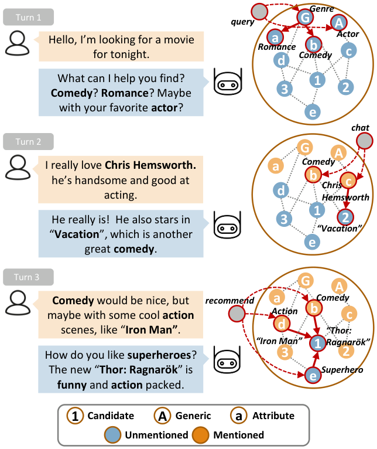

CR-Walker: Tree-Structured Graph Reasoning and Dialog Acts for Conversational Recommendation (树状图推理与对话动作驱动的对话推荐)
- 会议/期刊: EMNLP 2021 (Main)
- 作者与机构: Wenchang Ma, Ryuichi Takanobu, Minlie Huang (清华大学 CoAI / 阿里巴巴)
- 推荐链路定位: 端到端生成式（多轮对话中同时完成实体选择、推荐与回复生成）
- 研究方向: 对话推荐与智能体仿真 / 图神经网络与知识图谱推荐
- 论文原文: https://aclanthology.org/2021.emnlp-main.139.pdf
- 开源代码: https://github.com/truthless11/CR-Walker
TL;DR (1分钟核心速览)
对话推荐系统的两大痛点：背景知识只被当作"特征增强"而未做多路径推理，且选出的实体无法被有策略地组织进回复。CR-Walker 先以 3 类系统意图（recommend / query / chat）确定动作，再用 walker cell 在 KG 上按意图定制的两跳规则做树状推理（每跳可多选），把推理树前序线性化为 dialog act 拼入 GPT-2 输入，让"选了哪些实体"直接决定"怎么表达"。ReDial 全库排序下 Coverage 14.7（+20.5% vs KGSF）、知识 F1 47.7（+43.7% vs DCR）；GoRecDial T@1 81.1（+4.2% vs GoRecDial）；人工评测在流畅度/连贯性/信息量/有效性四项均显著优于人类参考答案（\(p<0.05\)）。
Background & Motivation (背景与核心矛盾)
- 主流范式: 一类是 recommendation-biased CRS（KBRD、KGSF、DCR），用 KG/R-GCN 增强用户画像与实体表示，再用模板或 RNN 生成回复；另一类是 dialog-biased CRS，靠自由文本隐式理解偏好。
- 前人局限: (1) 知识仅作为表征增强，单跳直接打分，无法像"用户喜欢 Hemsworth \(\to\)Vacation\(\to\)Comedy\(\to\) 推荐 Thor"那样沿多条路径串联实体；(2) 大多数工作停在"推断出实体"，不做回复层面的动作规划，选中的实体以什么口径说出去完全不受控。
- 核心洞察 (Key Insight): 对话推荐本质上是 task-oriented dialog，其"策略层"应当显式化——把意图 + 命中实体 + 实体的层级关系打包成一个 dialog act，则推荐决策与语言生成被同一个中间变量耦合。
- 本文切入点: 以树（而非 Moon et al. 的单链）承载多路径推理，并让这棵树同时充当推荐证据与生成控制信号。

Method (核心方法设计)
1. 整体框架 (Overall Architecture)
对话历史经 BERT+LSTM 得到话语向量 \(u_t\)，经 spaCy NER + 模糊匹配链接出已提及实体并自注意力池化为用户画像\(p_t\)；KG（DBpedia 构建，含候选物品 / 属性 / 泛类三层）经 R-GCN 编码为实体向量\(h_e\)。意图分类器先定 recommend/query/chat，随后 walker cell 从意图出发做两跳扩展得到推理树；树按前序遍历线性化为 [intent ( ... )( ... )] 形式的 token 序列，与\(u_t\) 拼接喂入 GPT-2 自回归生成回复。训练时意图、两跳选择（logistic 回归）与生成（MLE）联合优化。
flowchart TD
A["对话历史 x_t, y_{t-1}"] --> B["BERT+LSTM 话语向量 u_t / NER 用户画像 p_t"]
A --> C["意图分类 recommend/query/chat"]
C --> D["Walker Cell 第1跳: 按意图规则选中间实体"]
B --> D
E["KG + R-GCN 实体向量 h_e"] --> D
D --> F["Walker Cell 第2跳: 选属性/候选物品"]
F --> G["推理树 → 前序线性化 dialog act"]
G --> H["GPT-2 条件生成回复 y_t"]2. 关键设计拆解 (Key Designs)
-
意图定制推理规则（把 KG 搜索空间砍到可学习）: 全库 KG 两跳邻居爆炸，作者为每种意图写死合法实体集合——recommend: 已提及属性 \(\to\)候选物品（+已提及物品的属性）；query: 泛类\(\to\)属性；chat: 已提及实体\(\to\) 全实体。这一步不是工程琐碎，而是使两跳树推理在百万级 KG 上可训练、且让"意图"真正约束"选什么"。
-
Walker Cell 与门控上下文融合（多选树扩展）: 单跳推理的关键是上下文该向话语还是向画像倾斜。cell 用门控产生上下文 \(c_t^{(n)}\)，并把各跳上下文累加后与实体向量内积打分： \(\gamma^{(n)}=\sigma(\mathbf{w}\cdot[u_t;p_t;i_t;h_e])\)，\(c_t^{(n)}=\gamma^{(n)}u_t+(1-\gamma^{(n)})p_t\)， \(\hat{s}_{e'}=\sigma\big(h_{e'}\cdot\sum_{j=1}^{n}c_t^{(j)}\big)\)。 \(\hat{s}_{e'}>\tau\)即入选，故每跳可保留多个实体，天然形成树——累加\(\sum_{j\le n}c_t^{(j)}\) 让第二跳"记得"第一跳为何出发，避免同一物品因不同父节点被重复解释。
-
Dialog Act 前序线性化与联合训练: 树被序列化为带括号的 token 串，括号编码选择层级与顺序，直接把结构化决策注入 PLM 的词表空间（无需额外 adapter）。总损失 \(\mathcal{L}=\mathcal{L}_{int}+\sum_{n=1}^{2}\lambda_n\mathcal{L}_n+\mathcal{L}_{gen}\)，其中选择项为逐实体 logistic 损失\(\mathcal{L}_n=\sum_{e}\sum_{e'\in\mathcal{Z}_e^{(n)}}\big[-s_{e'}\log\hat{s}_{e'}-(1-s_{e'})\log(1-\hat{s}_{e'})\big]\)，标签\(s_{e'}\in\{0,1\}\)来自语料实体链接的弱监督，无负采样（每跳候选集已由规则裁剪）；推理时首跳宽度上限\(m\)、Top-p 采样解码，开销集中在 R-GCN 预计算 + 两次全候选打分。
Experimental Setup & Evaluation Protocol (实验设置与评估协议)
- 数据集与预处理（统计与构图细节原文置于附录，此处仅列公开规模）：
| 数据集 | #Dialogues | 候选物品 | 交互/场景说明 |
|---|---|---|---|
| ReDial | ~11.3k | 6,281 movies | AMT 众包双人角色扮演（recommender/seeker），单轮可提多部电影，多标签 Recall 评测 |
| GoRecDial | ~9.1k | 每轮 5 候选 | ParlAI 收集，seeker 带 5 部观看历史，recommender 从 5 部候选中选出正确一部 |
- 数据划分与防穿越: 按对话整体划分 train/valid/test（同原数据集设定），不存在单轮泄漏；每轮 \(t\)仅使用\(y_{t-1},x_t\)及之前历史构造\(u_t\)，并对历史截断\(l_{max}=3\) 以应对话题漂移。
- 排名评测协议: ReDial 为全库排序（Full-Ranking，候选为数据集中全部电影实体，非采样），指标 Recall@1/10/50 与 Coverage（测试集被推荐过的候选物品占比）；GoRecDial 为受限候选排序（5 选 1），指标 T@k（每轮命中率）与 C@k（对话结束命中率）。生成侧用 corpus-level BLEU、Distinct-2/3，知识侧按泛类层面（如只说"类型"而不苛求具体类型）计算 Precision/Recall/F1。
- 对比基线与超参: ReDial 对比 ReDial、DCR、KBRD、KGSF（后者额外引入 ConceptNet 词图谱）；GoRecDial 对比 BERT、R-GCN+GPT、GoRecDial。R-GCN/实体向量维度 \(d\)与 BERT/GPT-2 隐层对齐；人工评测 300 条样本 × 3 名 AMT 标注者、3 级量表，显著性用\(t\)-test（\(p<0.05\)）。
Key Experimental Results (实验关键数据)
1. 主实验对比 (Main Results)
ReDial（推荐 + 生成合并表，† 表示额外引入 ConceptNet）：
| Model | R@1 | R@10 | R@50 | Cov. | BLEU | Dist-2 | Dist-3 | Know-F1 |
|---|---|---|---|---|---|---|---|---|
| ReDial | 2.3 | 12.9 | 28.7 | 5.8 | 21.9 | 3.72 | 5.24 | 24.0 |
| DCR | 2.7 | 14.8 | 30.6 | 1.5 | 21.9 | 1.91 | 3.12 | 40.8 |
| KBRD | 3.0 | 16.3 | 33.8 | 11.2 | 22.8 | 4.92 | 9.21 | 35.9 |
| KGSF | 3.9 | 18.3 | 37.8 | 12.2 | 18.6 | 4.00 | 5.34 | 33.2 |
| CR-Walker | 3.7 | 17.6 | 37.1 | 14.7 | 26.6 | 21.2 | 48.1 | 47.7 |
| -depth=1 | 2.9 | 14.9 | 34.3 | 11.4 | 28.0 | 19.2 | 40.8 | 45.1 |
| +ConceptNet† | 4.0 | 18.7 | 37.6 | 15.2 | – | – | – | – |
| Improv. (vs 最强单-KG KBRD) | +23.3% | +8.0% | +9.8% | +31.3% | +16.7% | +330.9% | +422.3% | +32.9% |
GoRecDial：
| Model | T@1 | T@3 | C@1 | C@3 | BLEU |
|---|---|---|---|---|---|
| BERT | 25.5 | 66.3 | 26.4 | 68.3 | 23.9 |
| R-GCN+GPT | 75.6 | 95.7 | 76.1 | 96.3 | 25.2 |
| GoRecDial | 77.8 | 97.1 | 78.2 | 97.7 | 27.4 |
| CR-Walker | 81.1 | 97.5 | 81.3 | 98.1 | 29.6 |
| Improv. | +4.2% | +0.4% | +4.0% | +0.4% | +8.0% |
2. 消融实验 (Ablation Study)
| 配置 | R@1 | R@10 | R@50 | Cov. | BLEU | Dist-3 | Know-F1 |
|---|---|---|---|---|---|---|---|
| CR-Walker（两跳树推理） | 3.7 | 17.6 | 37.1 | 14.7 | 26.6 | 48.1 | 47.7 |
| w/o 第 1 跳（-depth=1，直接打分第 2 跳） | 2.9 | 14.9 | 34.3 | 11.4 | 28.0 | 40.8 | 45.1 |
| \(\Delta\) | -21.6% | -15.3% | -7.5% | -22.4% | +5.3% | -15.2% | -5.5% |
（宽度消融见图 3：首跳可选节点数 \(m\)增大时多数指标单调上升，\(m\) 超过约 6 后 R@1 有轻微回落，说明多路径优于单路径但存在边际递减。）
3. 关键实验发现 (Key Findings)
- 推理深度是推荐增益的主因，而非 PLM 规模: 去掉首跳推理（-depth=1）后 R@1 从 3.7 掉到 2.9（-21.6%）、Coverage 从 14.7 掉到 11.4，而此时框架已等价于 R-GCN+GPT 式直推——证明涨点来自"沿中间属性绕一跳"，而非文本侧增强。
- 多实体选择显著提升多样性与知识命中: CR-Walker 的 Distinct-2 达 21.2（KBRD 4.92，约 4.3 倍）、知识 F1 47.7，但 BLEU 仅 26.6，低于自身 -depth=1 的 28.0；作者归因为模型常走出与标注不同的合法推理树、生成"合理但不逐字匹配"的回复——即 BLEU 与多样性的经典权衡，需人工评测兜底。
- 显式动作规划优于纯 PLM 与人类即兴回复: 意图准确率仅 67.8%，但当模型意图与人类意图不一致时，人类参考回复四项指标全面下滑（如信息量 2.26\(\to\)1.99），而 CR-Walker 基本持平（2.33）；在相同意图子集上提升虽小，说明其优势主要来自"总会给出有效 query/recommend 动作"而非单纯语言更流畅。单 KG 下 R@1 3.7 略低于 KGSF 3.9（后者额外用了 ConceptNet），补上 ConceptNet 后升至 4.0 反超，说明树推理与外部词图谱信号可叠加。
Highlights & Limitations (亮点、对比与审稿批判)
- 与代表作对比 (vs. Prior Work): 相比 KBRD/KGSF 把 KG 当作"更好的 embedding"、单跳直推目标物品，CR-Walker 把 KG 当作推理路径生成器，中间实体既是推荐证据又是生成素材；相比 Moon et al. 的单链推理（依赖细粒度路径标注），本文以弱监督实体链接 + 树结构支持每跳多选，无需路径级人工标注；相比纯 GPT-2 基线，本文用显式 dialog act 把"推荐哪一个"从隐变量变成可控输入，信息量/有效性提升显著。
- 可迁移亮点: (1) "结构化决策树 \(\to\)前序括号序列\(\to\) PLM 输入"是一种极轻量的结构-文本对齐手段，可直接搬到多跳 QA、可解释推荐理由生成；(2) 用意图定制的合法邻居裁剪替代负采样，既降复杂度又提升可解释性，适合大规模 KG 上的在线候选收缩。
- 审稿级局限批判: (1) 推理规则（表 1）与两跳上限均为人工硬编码，遇到否定反馈（"不要喜剧"）或话题跳转即失效，作者也承认需额外语言理解模块；(2) ReDial 上意图准确率仅 67.8%、且 BLEU 与知识 Precision 均非最优，"结构更好但字面更差"的收益难以用自动指标完全辩护；树宽 \(m\)、阈值\(\tau\)、历史窗\(l_{max}=3\) 三个超参敏感，线上需重调。
Rating (四维评分)
- 方法创新性 (Novelty): ⭐⭐⭐⭐ （把 dialog act 从传统任务型对话的槽位抽象升级为"带层级的推理树"，实现推荐决策与语言生成的显式耦合，思路干净且有别于单链推理）
- 评估协议与实验扎实度 (Protocol & Experiments): ⭐⭐⭐⭐ （ReDial 全库排序 + Coverage 多样性 + 两类数据集 + 300 样本人工评测与显著性检验较完整，但生成指标依赖 corpus-level BLEU/Distinct，意图准确率偏低未做误差分析）
- 写作与数学规范度 (Clarity & Rigor): ⭐⭐⭐⭐ （walker cell 公式与联合损失定义清晰、图的动机示例直观；扣分在于推理规则细节与数据集统计全部塞进附录，正文缺复杂度分析）
- 工业落地与复现价值 (Industrial & Practical Value): ⭐⭐⭐ （代码已开源、R-GCN 可离线预计算，但依赖 DBpedia 实体链接与手工规则，跨域迁移需重写规则表，且 GPT-2 逐 token 生成延迟对实时对话偏高）